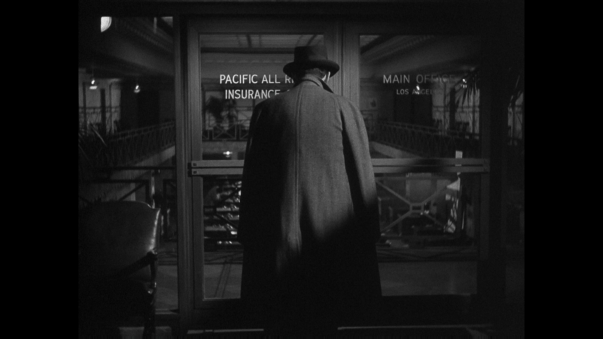
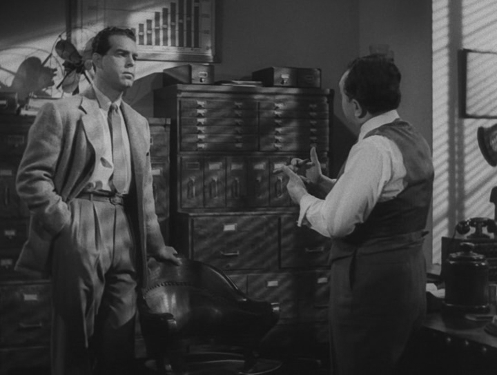

Pacto De Sangre


En la ciudad de Los Angeles un agente de una compañía de seguros y una cliente traman asesinar al marido de esta última para cobrar su seguro de accidentes.
Todo se complica cuando entra en acción Barton Keyes, investigador de la empresa de seguros.